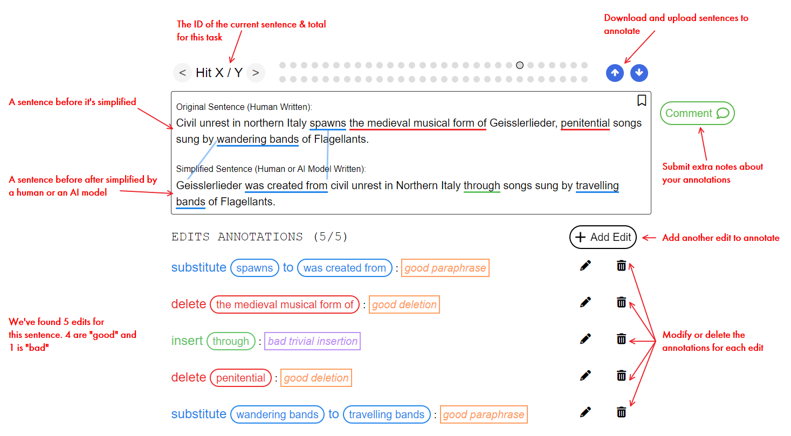
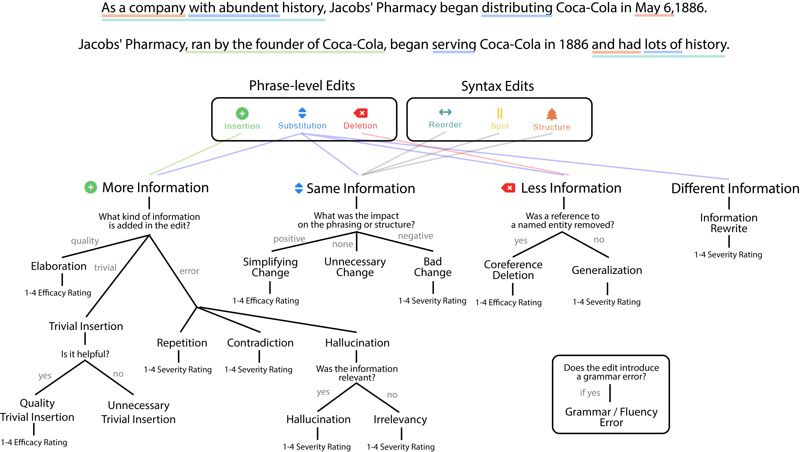

Introduction
Welcome! In this project you will read simplified sentences generated by Artificial Intelligence and rate their quality.
This qualification HIT will train you to perform this task. You must be able to:
- Find the changes our AI made (i.e. "selecting spans")
- Evaluate the quality of each change
- Identify errors in each change
Here's a big picture of what we're doing:
Selecting Alignments
We'll begin by understanding the ways our AI simplifies sentences.
Each independent piece of information in a sentence is called a phrase. Our AI may add, delete or modify the wording within a phrase. It may also re-order phrases or split a complex sentence into two sentences. Each individual change to the sentence is called an edit. Your task is to align the edits between the complex and simplified sentences.
Types of Edits
We see two classes of edits. Phrase edits which modify a single piece of information and syntax edits which modify the structure of the sentence. We begin by introducing the phrase edits:
-
Deletion Edits - The AI attempted to simplify by deleting unnecessary information. -
Insertion Edits - The AI attempted to add clarity by adding information which didn't previously exist. -
Substitution Edits - The AI attempted to reword a complicated phrase or concept
The syntax edits will be less common, and will look very different from phrase edits:
-
Splitting Edits - The AI attemped to split a complex sentence into two simpler sentences. -
Reordering Edits - The AI attempted to re-order the words within a phrase or phrases within a sentence. -
Structural Edits - The AI attemped to modify attributes (like the tense, structure or voice) of the sentence to present information more clearly.
NOTE: Phrase edits and syntax edits are independent of each other! A single word can be a part of both a phrase edit and a syntax edit.
Here's an example of what selecting alignments looks like for one sentence:

Examples
This tutorial will primerily demonstrate how to annotate through examples. When you read through the examples, think about how you would annotate the spans:
How much do we select?
Generally, you want to select the smallest amount of text as possible which contains a single piece of information. Sometimes there can be two different types of edits next to each other. If a edit seems too large, try to highlight multiple edits instead.
Examples
Remember! You may be tasked with identifing phrase and syntax edits at the same time.
Capitalization & Ending Period
Some of our AI outputs automatically lowercase all the words in their output, add spacing around punctuation or remove the ending period in the sentence, please ignore these changes.
Quiz
Now it's your turn! Take a look at these pairs of sentences and try to select the edits. You do not need to annotate your edits, just select the alignment!
1.1:
1.2:
In the real HIT, we have trained another AI to provide the alignment for you. However, this AI is frequently wrong (it will be wrong for almost every HIT), so please also fix its alignments. Go ahead and try it!
1.3:
Annotating Deletions
Now we've selected the alignments, let's look at how to annotate them. We'll look at each edit type, starting with deletions.
A deletion is an attempt to simplify by deleting unnecessary, irrelevant or complicated information or concepts.
Examples
Rating by Severity
When content is deleted from a sentence, it will always contain some amount of information. We also ask that you rate how significant the deleted content is to the main idea of the original sentence. You will rate the significance on a 4 point scale.
Examples
Observe this original sentence:
Original Sentence (Human Written):
Born into slavery in Virginia in 1856, Booker T. Washington became an influential African American leader at the outset of the Progressive Era.
Simplified Sentence (Human or AI Model Written):
This sentence communicates many different facts. Here are just a few:
- Booker T. Washington was born in Virginia
- Booker T. Washington was born in 1856
- Booker T. Washington was born into slavery
- Booker T. Washington was an influential leader
- Booker T. Washington was a African American leader
- Booker T. Washington was a influential African American leader as a result of being born into slavery
- Booker T. Washington was a leader at the beginning of the Progressive Era
Hover over each piece of information to see which part of the sentence could be deleted to remove that information from the sentence. As you can see, sentences which communicate many ideas may be hard to narrow down whether a span is significant.
In this case, the main idea of the sentence is Booker T. Washington is an influential African American leader. Deletions are necessary for text simplification, we just want to ensure this main idea is still being communicated.
Let’s put it together with a few other sentences:
Coreference Errors
Deletions may also make a sentence unreadable by deleting a very specific piece of information. If a reference to a pronoun is deleted and not referenced elsewere in the sentence, this is a coreference error.
Grammar & Fluency Errors
Deletions may also introuduce errors in fluency or grammar. Fluency refers to the quality or flow of a sentence and grammar refers to the basic conventions.
NOTE: Sometimes you will see spacing errors. These are typically a formatting problems with our data and you do not need to annotate these errors.
Quiz
Now it’s your turn! Take a look at these sentences and try to identify and categorize the deletions.
2.1:
2.2:
2.3:
Annotating Insertions
An insertion is an attempt to add clarity by adding information which didn't previously exist. While deletions are straightforward, insertions may exibit many more types of errors. We’ll get to the errors later, but for now, let’s talk about
- Elaboration - Added meaningful and correct extra information
Simplifications may also introduce words which do not add new information. These trivial edits must be annotated, because even minor changes can still have major effects on the quality of a simplificaiton.
- Trivial Insertion - Added minor wording (the, a, etc.)
Annotating Errors
Similar to deletions, insertions have their own types of errors.
- Hallucination - New information is introduced but does not add clarity
- Irrelevant - New information is introduced which is unrelated to the main idea
- Contradiction - Phrase added but clearly contradicts information in the original sentence
- Redundant - Phrase added but fails to contain new information
Let’s look at some examples of each:
Evaluating Factuality
Sometimes you will see an insertion which adds new information which you may not know if it's correct or not. In this case, try to do basic research to see if the insertion is easily, verifiably correct. If there's any ambiguity, feel free to leave a comment on that sentence.
Rating by Severity
Insertions also have a severity, meaning you will rate them on a scale of 1-3 by how helpful or harmful the insertion is. Here's some examples of different severity elaboration edits:
Here's some examples of different severity errors:
Putting it Together
Similar to deletions, insertions can introduce fluency and grammar errors. Remember! Grammar and fluency errors are independent of your other rating. You could have a helpful elaboration insertion which introduces an error or a high impact hallucination which does not introduce a error. Take a look a these examples with many insertions:
Quiz
Now it’s your turn! Take a look at these sentences and rate the insertions for type and quality.
3.1:
3.2:
Annotating Substitutions
Now that you learn what are deletions and insertions, let's look at a more complicated edit type: the substitution.
An edit is a substitution anytime information is retained from the complex to simple sentence but the wording is changed. Parts of the “information” in the original phrase may be added or removed, but the core meaning of the phrase is transfered from the original to simplified sentence. Sometimes, a substitution even entirely rewrites the same phrase to a completely different meaning.
Disinguish between substitution and deletion + insertion pair
Sometimes an edit is a substitution, and somtimes it is an insertion and deletion. This can be hard to differentiate, but here’s a general guideline:
- Substitution - if both spans are about same type of content (actions, locations, ...)
- Deletion + Insertion - otherwise
Types of Substitution
As mentioned before, substitution is categorized into four types:
- Same meaning - This is also a paraphrase, the AI attempted to replace complicated words, while retaining the meaning
- Less information - Similar to an insertion, the AI attempted to modify the phrase to add clarity to the sentence
- More information - Similar to a deleton, the AI attempted to modify the phrase to remove unecessary information from the phrase
- Different meaning - The AI removed all information and replaced it with new information
Let’s look at some examples on how to determine what kind of information change is in a substitution:
Paraphrasing
Likely the most common edit you will encounter is a paraphrase. The AI isn’t modifying the information, it is simply substituting complex words for simpler words. The substitution can be more simple, unchanged, or less simple.
Similar to past annotations, you will rate the severity as well:
Meaning Transformation Error
Following other error types, we simply rate the severity for its impact on the clarity of the sentence. Like we mentioned earlier, it may be tough to distinguish between an insertion+deletion and a substitution (specifically a substitution with a totally different meaning). Here’s some examples:
Information Change
The last two types of substitution: less information and more information ask the exact same questions as deletion and insertion! Please refer back to those steps for in-depth information on these annotations. Here’s a few examples:
Quiz
For this quiz, there may be more than only substitution edits. Please only select the other edits, you do not need to annotate them.
4.1:
4.2:
4.3:
Annotating Splits
A sentence split is an attempt to simplify the complex original sentence by splitting it into two or more simpler sentences. Although the split edits are easy to spot and are automatically marked as a || symbol, split edits are usually accompanied by other edits like deletion, substitution, or insertion, which you need to mark as well.
For example, to split a sentence, only changing the punctuation like comma to period and uppercasing the first letter of the second sentence is usually not enough to make the new sentences grammatically correct.
Splits can either be good or unnecessary. A good split is one that makes the sentence simpler and easier to understand. An unnecessary split is one that does not make the sentence simpler.
A split can also introduce a grammar / fluency error, like any other edits.
Examples
Now let's look at some examples of split edits.
Split edits by only changing the punctuation:
Split edits associated with a deletion edit:
Split edits associated with an insertion edit:
Split edits associated with a substitution edit:
Quiz
One of our annotators actually found this tutorial window doesn't work! In the real interface, we'll highlight the split for you, and you'll select the spans corresponding to the split. Just take a glance at the answer for this. Thank you.
5.1:
Annotating Ordering Changes
In a
Rating by Severity
Re-order edits do not modify the information in the sentence. Therefore, we only rate for how the edit adds clarity. Similar to a paraphrase (i.e. a substitution which adds no new information), we rate whether the edit is helpful and its efficacy/severity.
Phrase vs. Syntax Edits
Typically a sentence doesn’t just move phrases around, it will modify the wording or information in that phrase. Because of this, an edit can be both a phrase edit and a syntax edit.
Quiz
6.1:
Annotating Structure Changes
In a
As we have seen, a change in voice, tense or clause structure can all be types of structural changes.
Reorder vs. Structural Edits
A structural edit is independent of a re-order edit! Remember a re-order edit exists simply to annotate the order information is being presented has changed, while a structural edit requires some attribute of the sentence to be modified.
Rating by Severity
We rate severity similar to the re-order edit. Because no information is changed, we only annotate for how the change adds clarity.
Phrase vs. Syntax Edits
As you can see phrase edits can only capture how individual pieces of information or a small set of words change. When the AI creates an edit which modifies the sentence as a whole, this must be captured by a structural edit. Here’s some examples of overlapping phrase and syntax edits:
Only Select 1 Reorder
One particular case you may find is a structural change which re-orders a phrase. In this case, only select the phrase which you think best captures the re-order, not every phrase which is moved in the sentence.
Putting it Together
Structural edits are the least common and most complicated edit type, so if there is ambiguity in your answer, we encourage you provide a comment explaining why you made your decision. Here’s an example which may prove difficult to annotate:
Quiz
7.1:
Conclusion
Congradulations on completing the tutorial! You should be able to understand all types of phrase-level and sentence-level edits and the nuances in rating these edits. In the 'Quiz', you will use the onboarding data we provided to test your ability to rate real outputs from our AI models. If you have any questions, feel free to reach out.
When annotating, if you come across a difficult decision, please refer to this tutorial and make comment explaining your thought process. You can also refer to the below summary of definitions and reminders.
Phrase-level Edits
-
Deletion Edits - The AI attempted to simplify by deleting unnecessary information. -
Insertion Edits - The AI attempted to add clarity by adding information which didn't previously exist. -
Substitution Edits - The AI attempted to reword a complicated phrase or concept
Identifying Change in Information
Information change can be broadly organized into the following categories. While
- Less information - Modify the phrase to add clarity to the sentence
- Same meaning (Paraphrase) - Replace complicated words, while retaining the meaning
- More information - Modify the phrase to remove unecessary information from the phrase
- Different meaning - The AI removed all information and replaced it with new information
Phrase-level Errors
Information addition (either through an
- Elaboration - Added meaningful and correct extra information
- Trivial Insertion - Added minor wording (the, a, etc.)
- Hallucination - New information is introduced but does not add clarity
- Irrelevant - New information is introduced which is unrelated to the main idea
- Contradiction - Phrase added but clearly contradicts information in the original sentence
- Redundant - Phrase added but fails to contain new information
Information removal (either through an
- Coreference Error - A reference to a pronoun is deleted and not referenced elsewhere in the sentence
Lastly, any edit (syntactic or phrasal), may exhibit:
- Grammar & Fluency Error - A basic error in sentence grammar or fluency. Fluency refers to the quality or flow of a sentence and grammar refers to the basic conventions
Sentence-level Edits
-
Splitting Edits - The AI attemped to split a complex sentence into two simpler sentences. -
Reordering Edits - The AI attempted to re-order the words within a phrase or phrases within a sentence. -
Structural Edits - The AI attemped to modify attributes (like the tense, structure or voice) of the sentence to present information more clearly.
Remember
Decision Tree
This graphic outlines the different decisions you may make about edits in a sentence:

This concludes the tutorial of the interface.